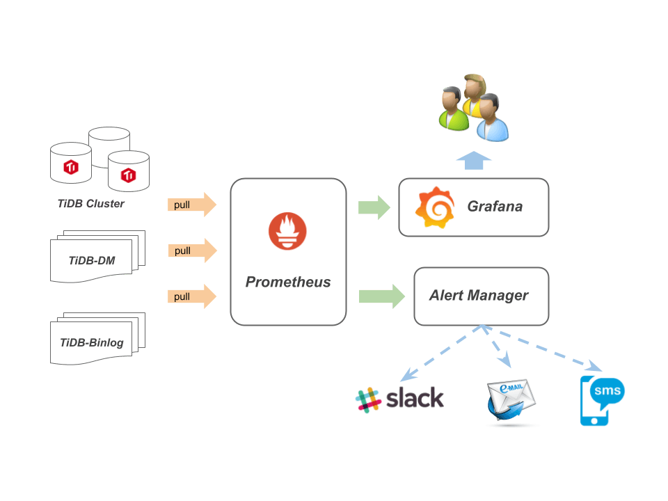

监控架构 - 那些年我们举报的神马

Contents
[NOTE] Updated January 20, 2020. This article may have outdated content or subject matter.
创业
先帝创业未半而中道崩殂，今三分天下……
因为没有及时收到告警导致整体垮掉而被领导责罚就是这个样子啦，所以小兵挂掉需要及时获知消息用于及时作出战略更新
选用 prometheus 家族的 alertmanager，然后自行设计告警规则定义纲常大道
- Brain-storming
- 现有监控架构
- 现有监控数据
- 补充监控数据
- SRE 制定大纲
纲常
- labels 定义
- Alert.rules 参数定义 引用站外文章
- “Alert” 是报警规则的名字，名字间不能有空格，可以用下划线链接；
- “IF” 是数据的查询表达式
- “FOR” 是报警状态持续超过 1 分钟后，将报警由状态 “PENDING” 改为 “FIRING”，报警将交给 Alertmanager 处理。
- “LABELS” 为自定义数据，我们在这里指定了报警的级别和显示 “IF” 中表达式的值。
- “ANNOTATIONS” 为自定义数据，我们在这里提供报警的现象和原因介绍。
目的
根据 5W1H 攻略思考该怎么写一条告警规则
- 告警能否判断集群状态
- 告警是否能帮助解决或预防问题
- 在 POC 的时候，是否能(非精准)提醒集群瓶颈在哪里
- 告警能否有效的被执行
- 可以设置多条规则监控同一个服务 // 单服务挂掉有多条告警，告警监控服务的不同路线
- 当告警条件全部成功后，再进行优化、精准告警
- 告警误报的影响是什么
- 告警可以误报，但是不可以不告警 // 结果出现有狼来了效应，产生怠慢消极状态
- 在整体集群垮掉的时候，告警要暂时关闭 // 过多的重复告警，影响现有问题解决
- 我们还缺少那些告警判断
主机监测
判断主机状态可能需要这些东东
监控数据来源于 node_exporter.json
- 主机状态监测
- 主机探活机制
- 主机资源监测
- CPU
- 单个进程 CPU
- 主机整体 CPU
- 机器 load 负载
- RAM
- 单个进程 RAM
- 主机整体 RAM
- SWAP 使用量 // 超过一定使用量告警
- DISK
- 磁盘 读写延迟
- 磁盘 Utilization
- 磁盘容量监测
- 磁盘读写状态
- 文件描述符占用量
- 磁盘 inode 使用数量
- 网络
- 流量进出
- CPU
数据库监测
判断数据库状态数据来值于那些提前在 TiDB、PD、TiKV 代码中定义的代码瞄点
- 数据库组件状态监测
- 组件探活
- 组件链路状态监测
- TiDB PD TiKV 组件之间延迟
- 数据库业务
- QPS 延迟
- 数据库组件运行状态监测
- PD 调度
- TiDB SQL 处理
- TiKV 资源存储与调度
- 数据库资源占用监测
- TiDB 内存使用量
- TiKV 存储使用量、计算资源使用量
信息战
有了数据和目标，思考怎么描述一条告警规则让其将信息准确表达给观察者
- 告警规则
- 监控目标
- 监控阈值
- 自定义 labels
- 优先级
- 组件
- 发送告警
- silences
- 维护区间
- 优先级
- 告警链路
- 邮箱
- 微信
- phone / sms
- 告警重复出现
- 是否可修复
- 产品内修复
- 产品外修复
- 不可修复
- 产品 bug
- 考虑告警优化
- 是否可修复
- 问题处理 // alertmanger 不涉及该功能
- 优先级
- 问题处理
- 问题升级
- 问题记录
- 工单关闭
告警等级
自定义 lables 信息，补充告警信息
- env
- test-cluster // 集群信息
- channels
- alerts // 接受告警的 slack channel
- level
- emergency 0 phone
- 主要是某个组件挂掉了才会触发
- critical 1 sms
- 某个组件出现了问题，但是可以延后处理，比如 8 个小时
- warning 2 wechat
- 某个组件通讯或者延迟大于某个阈值，偶然现象或者频发现象，保留类告警，可以根据业务调整或取消
- notice 3 slack
- 提示类告警，就是通知下这块延迟高或者要问题了，你应该找个时间看下集群了。这块和业务有关系，不是 tidb 的业务，是 SQL 的业务
- emergency 0 phone
- service // 告警组件
- TiDB
- TiKV
- PD
- OS
- color // 根据不同等级可定义不同颜色，slack message 支持不同颜色
- #2eb886
告警模范
-
在 Prometheus 配置文件中引用相关告警规则，重启后生效
1 2rule_files: - 'test.lablels.yml' -
相关内容添加到
test.lablels.yml文件中 -
更多告警规则可以阅读 tidb-ansible TiDB alert rule
1 2 3 4 5 6 7 8 9 10 11 12 13 14 15 16 17 18 19 20 21 22 23 24 25 26 27 28 29 30 31 32 33 34 35 36 37 38 39 40 41 42 43 44 45 46 47 48 49 50 51 52 53 54 55 56 57 58 59 60groups: - name: alert.rules // 文件根，一般默认声明为文件名或该分组 rules: - alert: NODE_disk_readonly // 告警名称，全局唯一 expr: node_filesystem_readonly{fstype=~"(ext.|xfs)"} > 1 // 监控磁盘是否为只读状态 for: 1m labels: env: test-cluster // 声明集群变量 level: emergency // 声明告警等级 service: OS // 声明服务组件 channels: alerts // 声明接受告警的 slack channel expr: node_filesystem_readonly{fstype=~"(ext.|xfs)"} > 1 annotations: description: 'alert:{{ $labels.expr }} instance: {{ $labels.instance }} values: {{ $value }}' // 最终告警内容信息拼接 value: '{{ $value }}' summary: disk readonly // 根据接受者不同，此处可能是告警 title 或者告警描述 - alert: TiDB_memery_abnormal expr: go_memstats_heap_inuse_bytes{job="tidb"} > 1e+10 for: 1m labels: env: test-cluster level: warning service: TiDB channels: alerts expr: go_memstats_heap_inuse_bytes{job="tidb"} > 1e+10 annotations: description: 'alert: {{ $labels.expr }} values: {{ $value }}' value: '{{ $value }}' summary: TiDB mem heap is over 1GiB - alert: PD_etcd_write_disk_latency expr: histogram_quantile(0.99, sum(rate(etcd_disk_wal_fsync_duration_seconds_bucket[1m])) by (instance,job,le) ) > 1 for: 1m labels: env: test-cluster level: emergency service: PD channels: alerts expr: histogram_quantile(0.99, sum(rate(etcd_disk_wal_fsync_duration_seconds_bucket[1m])) by (instance,job,le) ) > 1 annotations: description: 'alert: {{ $labels.expr }} instance: {{ $labels.instance }} values:{{ $value }}' value: '{{ $value }}' summary: PD_etcd_write_disk_latency - alert: TiKV_server_report_failure_msg_total expr: sum(rate(tikv_server_report_failure_msg_total{type="unreachable"}[10m])) BY (store_id) > 0 for: 1m labels: env: test-cluster level: critical service: TiKV channels: alerts color: 2eb886 expr: sum(rate(tikv_server_report_failure_msg_total{type="unreachable"}[10m])) BY (store_id) > 0 annotations: description: 'alert: {{ $labels.expr }} instance: {{ $labels.instance }} values: {{ $value }}' value: '{{ $value }}' summary: TiKV server_report_failure_msg_total error
to Slack 案例
-
slack_config 配置测试
- 参考：slack_config
- 参考：slack_api
- 参考：AlertManager config 示例 Example
- alertmanger 配置文件说明阅读 监控架构 - 专业打小报告好多年
-
以下内容保存为
alertmanager.yml文件，AlertManager 启动时指定该配置文件启动1 2 3 4 5 6 7 8 9 10 11 12 13 14 15 16 17 18 19 20 21 22 23 24 25 26 27 28 29 30 31 32 33 34 35 36 37 38 39 40 41 42 43 44 45 46 47 48 49 50global: slack_api_url: 'https://hooks.slack.com/services/T0666PYPM/B2E666BSBG/OQ7666666vMupZqTnb1234' # slack api 地址 route: receiver: "alerts-test" group_by: ['env','instance'] group_wait: 30s group_interval: 3m repeat_interval: 3m routes: - match: env: test-cluster receiver: alerts continue: true - match: env: test-cluster #同时满足 env:test-cluster、severity:critical、server: TiKV、channels: alerts 才会发送到 receiver: labels-test severity: critical server: TiKV channels: alerts receiver: labels-test # 默认 接收器 receivers: - name: 'alerts-test' slack_configs: - channel: '#alters-test' username: 'default' icon_emoji: '😇' title: '{{.CommonAnnotations.summary}}' text: 'in {{.CommonLabels.env}}: {{ .CommonLabels.alertname }} {{ .CommonAnnotations.description }}' # 普通版 - name: 'alerts' slack_configs: - channel: '#long' username: 'alert' icon_emoji: ':TiDB:' title: '{{.CommonAnnotations.summary}} : {{ .CommonLabels.level}}' text: 'in {{.CommonLabels.env}}: {{ .GroupLabels.alertstat }} : {{ .CommonAnnotations.description }}' # labels (参考 slack_api 与 slack_config) - name: 'labels-test' slack_configs: - channel: '#{{.CommonLabels.channels}}' fallback: '{{.CommonLabels.alertname}} : {{ .CommonAnnotations.summary }}' username: 'Robot' icon_emoji: '😂' icon_url: 'http://www.tidb.cc' color: '#{{.CommonLabels.color}}' #改变 Slack 文本框颜色 title: '{{.CommonLabels.alertname}} : {{ .CommonAnnotations.summary }} : {{ .CommonLabels.server}} : {{ .CommonLabels.level}}' title_link: 'http://172.16.10.65:9090/alerts' text: 'in {{.CommonLabels.env}} : {{ .CommonAnnotations.description }}' pretext: 'http://wiki.tidb.cc/{{.CommonLabels.srv}}/{{ .CommonLabels.alertname}}'
启动参数
- alertmanager 启动参数
./alertmanager -config.file=alertmanager.yml -storage.path=./data/ -log.level=debug -web.listen-address=0.0.0.0:9093 -data.retention=1h -log.format="logger:syslog?appname=alert-rules-test&local=7"- log 输出到
/var/log/messages, 搜索appname=alert-rules-test，用于告警调试使用
告警过程
-
告警发送经过
- Prometheus 根据 alert.rules 匹配 metric 数据，匹配成功后发送到 AlertManager
- AlertManager 收到后，一条告警会通过
route > match > LABELS > receivers匹配到接收器 - 然后根据 group_by 内容匹配并聚合告警
-
group_by: [‘env’,‘instance’] 参数说明
- env and instance 划分为一组，如果有多个参数，递归匹配，直到匹配不到
- 取值范围
alert.rule > LABELS、metrics > instance、job、type等
API 信息
- http api 说明
- 请求 Prometheus alert 告警 json 格式
- 使用前需要编码
http://172.16.10.65:9090/api/v1/query?query=(100%20-%20(avg%20by%20(instance)%20(irate(node_cpu%7Bmode%3D%22idle%22%7D%5B5m%5D))%20*%20100))%20&step=15s- 请求 cpu 使用量
- URL 编码
URL-encoded
- 请求 alertmanager 告警 json 格式
curl 'http://localhost:9093/api/v1/alerts'
致谢

- Grafana 监控、度量分析仪表板工具，从 Prometheus 获取数据
- Prometheus 用于存放监控数据的时序数据库
- push gateway push acceptor for ephemeral and batch jobs
- Black-box 黑盒测试工具，支持 HTTP, HTTPS, DNS, TCP and ICMP
- Node-export 主机资源 agent 组件
- 告警平台设计